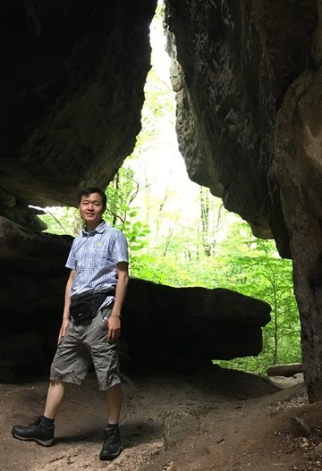

Wenjun JIANG 蒋文俊
Research Engineer
Mobile Platform Solutions/B2B
Samsung Research America
Email: wenjunji AT buffalo DOT edu
Address: 645 Clyde Ave, Mountain View, CA 94043
Biography
I'm now a research engineer of Samsung Research America at Mountain View. I received my Ph.D. degree from the Department of Computer Science and Engineering of SUNY Buffalo, supervised by Dr. Lu Su. Before that, I received the BS and MS degrees from the Department of Computer Science and Engineering, Tsinghua University, China.
Research Interests
My research interests are broadly in the areas of mobile and wireless sensing, data mining and machine learning, big data and distributed computing. Currently I mainly focus on developing novel mobile and wireless sensing solutions for business scenarios.
Publications
Journal:
-
[TOSN'18]
Chenglin Miao, Wenjun Jiang, Lu Su, Yaliang Li, Suxin Guo, Zhan Qin, Houping Xiao, Jing Gao, and Kui Ren, "Privacy-Preserving Truth Discovery in Crowd Sensing Systems", ACM Transactions on Sensor Networks, accepted.
-
[TPDS'18]
Wenjun Jiang,
Chenglin Miao, Lu Su, Qi Li, Shaohan Hu, Shiguang Wang, Jing Gao, Hengchang Liu, Tarek F. Abdelzaher, Jiawei Han, Xue Liu, Yan Gao, and Lance Kaplan, "Towards Quality Aware Information Integration in Distributed Sensing Systems", IEEE Transactions on Parallel and Distributed Systems, Vol.29, No.1, pp.198-211, 2017.
(PDF)
Conference:
-
[MobiSys'21 Demo]
Ruofeng Liu, Wenjun Jiang, and Xun Chen, "Acoustic ruler using wireless earbud.", 19th Annual International Conference on Mobile Systems, Applications, and Services, June 2021.
(PDF)
-
[MobiCom'20]
Wenjun Jiang,
Hongfei Xue, Chenglin Miao, Shiyang Wang, Sen Lin, Chong Tian, Srinivasan Murali, Haochen Hu, Zhi Sun, Lu Su, "Towards 3D Human Pose Construction Using WiFi", the 26th ACM International Conference on Mobile Computing and Networking, London, UK, September 2020.
(PDF) (Video)
-
[UbiComp'20]
Hongfei Xue,
Wenjun Jiang (co-first author), Chenglin Miao, Fenglong Ma, Shiyang Wang, Ye Yuan, Shuochao Yao, Aidong Zhang, and Lu Su, "DeepMV: Multi-View Deep Learning for Device-Free Human Activity Recognition", the ACM International Joint Conference on Pervasive and Ubiquitous Computing, Cancun, Mexico, September 2020.
(PDF)
-
[BigData'19]
Rui Li, Fenglong Ma, Wenjun Jiang, and Jing Gao, "Online Federated Multitask Learning", IEEE International Conference on Big Data, Los Angeles, USA, December 2019.
(PDF)
-
[MobiHoc'19]
Hongfei Xue, Wenjun Jiang, Chenglin Miao, Ye Yuan, Fenglong Ma, Xin Ma, Yijiang Wang, Shuochao Yao, Wenyao Xu, Aidong Zhang, and Lu Su, "DeepFusion: A Deep Learning Framework for the Fusion of Heterogeneous Sensory Data", the 20th ACM Symposium on Mobile Ad Hoc Networking and Computing, Catania, Italy, July 2019.
(PDF)
-
[WWW'19]
Shuochao Yao, Ailing Piao, Wenjun Jiang, Yiran Zhao, Huajie Shao, Shengzhong Liu, Dongxin Liu, Jinyang Li, Tianshi Wang, Shaohan Hu, Lu Su, Jiawei Han and Tarek Abdelzaher, "STFNets: Learning Sensing Signals from the Time-Frequency Perspective with Short-Time Fourier Neural Networks", the 28th World Wide Web Conference, San Francisco, USA, May 2019.
(PDF)
-
[MobiCom'18]
Wenjun Jiang,
Chenglin Miao, Fenglong Ma, Shuochao Yao, Yaqing Wang, Ye Yuan, Hongfei Xue, Chen Song, Xin Ma, Dimitrios Koutsonikolas, Wenyao Xu, and Lu Su, "Towards Environment Independent Device Free Human Activity Recognition", the 24th ACM International Conference on Mobile Computing and Networking, New Delhi, India, October 2018.
(PDF) (Video)
-
[ICDCS'18]
Wenjun Jiang,
Qi Li, Lu Su, Chenglin Miao, Quanquan Gu, and Wenyao Xu, "Towards Personalized Learning in Mobile Sensing Systems", the 38th International Conference on Distributed Computing Systems, Vienna, Austria, July 2018.
(PDF)
-
[MobiHoc'18]
Chenglin Miao, Qi Li, Houping Xiao, Wenjun Jiang, Mengdi Huai, and Lu Su, "Towards Data Poisoning Attacks in Crowd Sensing Systems", the 19th ACM Symposium on Mobile Ad Hoc Networking and Computing, Los Angeles, USA, June 2018.
(PDF)
-
[WWW'18]
Chenglin Miao, Qi Li, Lu Su, Mengdi Huai, Wenjun Jiang, Jing Gao, "Attack under Disguise: An Intelligent Data Poisoning Attack Mechanism in Crowdsourcing", the 27th World Wide Web Conference, Lyon, France, April 2018.
(PDF)
-
[INFOCOM'17]
Chenglin Miao, Lu Su,
Wenjun Jiang,
Yaliang Li, Miaomiao Tian, "A Lightweight Privacy-Preserving Truth Discovery Framework for Mobile Crowd Sensing Systems", the 36th IEEE International Conference on Computer Communications, Atlanta, GA, May, 2017.
(PDF)
-
[EMBC'16]
Shi Chao Gao, Peter Wittek, Li Zhao, and Wen Jun Jiang, "Data-driven estimation of blood pressure using photoplethysmographic signals", the 38th IEEE International Conference on Engineering in Medicine and Biology Society, Orlando, FL, USA, August 2016.
(PDF)
-
[SenSys'15]
Chuishi Meng,
Wenjun Jiang,
Yaliang Li, Jing Gao, Lu Su, Hu Ding, Yun Cheng, "Truth Discovery on Crowd Sensing of Correlated Entities", the 13th ACM Conference on Embedded Networked Sensor Systems, Seoul, South Korea, November 2015.
(PDF)
-
[SenSys'15]
Chenglin Miao,
Wenjun Jiang,
Lu Su, Yaliang Li, Suxin Guo, Zhan Qin, Houping Xiao, Jing Gao, Kui Ren, "Cloud-Enabled Privacy-Preserving Truth Discovery in Crowd Sensing Systems", the 13th ACM Conference on Embedded Networked Sensor Systems, Seoul, South Korea, November 2015.
(PDF)
-
[Healthcom'14]
Wen Jun Jiang,
Shi Chao Gao, Peter Wittek, Li Zhao, "Real-time quantifying heart beat rate from facial video recording on a smart phone using Kalman filters", the 16th IEEE International Conference on e-Health Networking, Applications and Services, Natal-RN, Brazil, October 2014.
(PDF)
-
[EMBC'14]
Wen Jun Jiang,
Peter Wittek, Li Zhao, Shi Chao Gao, "Adaptive Thresholding with Inverted Triangular Area for Real-Time Detection of the Heart Rate from Photoplethysmogram Traces on a Smartphone", the 36th IEEE International Conference on Engineering in Medicine and Biology Society, Chicago, IL, USA, August 2014.
(PDF)
Awards
- Best Graduate Research Award from the CSE Department of UB (top 1 %), 2019
- MobiCom Travel Award, 2018
- MobiSys Travel Award, 2017
- Undergraduate-Entrance Scholarship (Top 10 in Shanghai), 2008